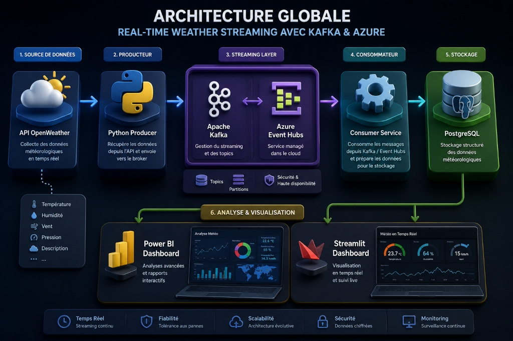

Architecture de Pipelines de Données avec Kafka & Azure

Notre conception repose sur une séparation claire des responsabilités :
Un script robuste interrogeant de manière asynchrone l'API OpenWeatherMap toutes les 10 secondes.
import json
import time
import requests
from kafka import KafkaProducer
def fetch_weather(city="Paris"):
url = f"http://api.openweathermap.org/data/2.5/weather?q={city}&appid=API_KEY"
res = requests.get(url).json()
return {
"city": city,
"temperature": res["main"]["temp"],
"humidity": res["main"]["humidity"],
"wind_speed": res["wind"]["speed"]
}
producer = KafkaProducer(
bootstrap_servers=['localhost:9092'],
value_serializer=lambda v: json.dumps(v).encode('utf-8')
)
while True:
data = fetch_weather()
producer.send('weather_topic', data)
print(f"Sent: {data}")
time.sleep(10)
Hébergé localement ou sur des machines virtuelles dédiées. Offre un débit ultra-élevé et un contrôle total sur l'infrastructure et la configuration des partitions.
Service cloud entièrement géré (PaaS). Permet une scalabilité automatique (cloud scale) sans gestion de serveurs, avec une intégration native à l'écosystème Azure.
Les flux de données bruts sont consommés, validés, et structurés dans des tables relationnelles.
La donnée stockée prend tout son sens grâce à l'analyse visuelle. Power BI permet d'identifier des tendances historiques.
Une application web moderne déployée via Streamlit pour un accès immédiat aux analyses en temps réel, sans la lourdeur d'outils BI traditionnels.
Actualisation automatique des graphiques
KPIs en direct (Température, Humidité)
Session Questions / Réponses